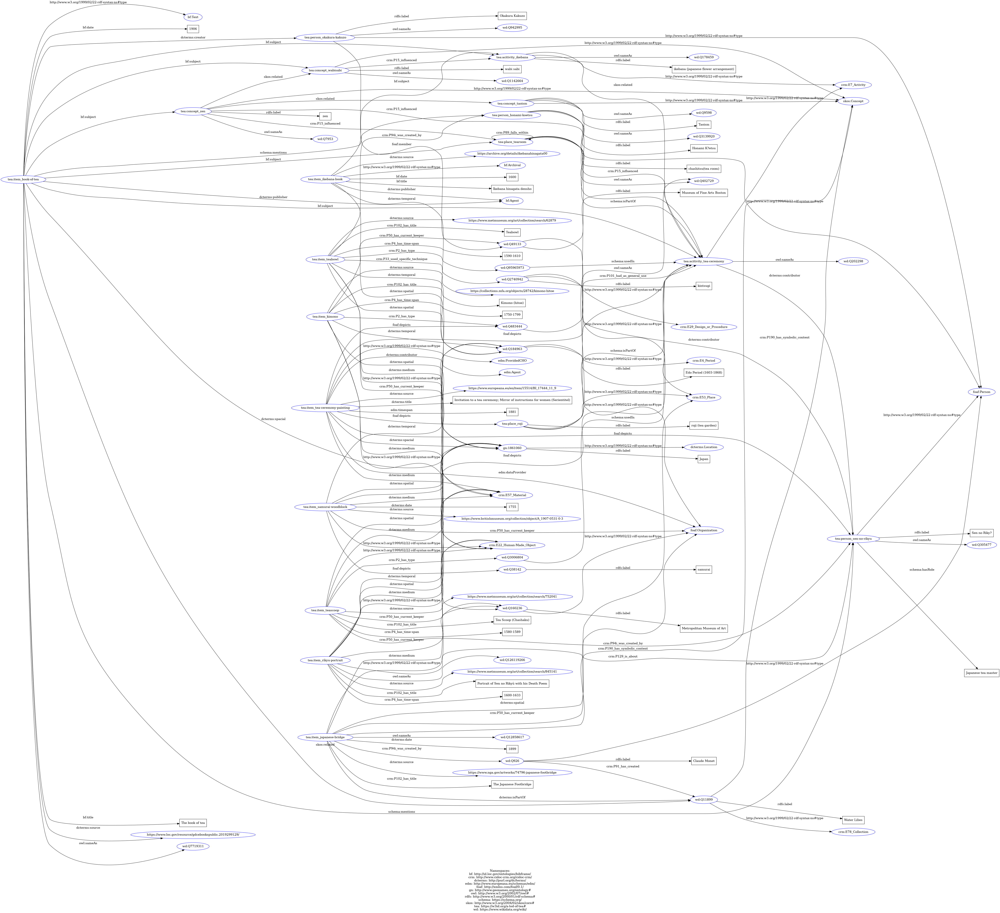

Knowledge Representation
Full-Text Analysis
This section presents a TEI/XML-encoded excerpt of The Book of Tea by Okakura Kakuzō. The encoding highlights key structural and semantic components such as chapters, paragraphs, names of places and people, and significant thematic references. Following TEI P5 Guidelines, the markup emphasizes the cultural, philosophical, and aesthetic ideas associated with the Japanese tea ceremony, including Zen, simplicity, and transience. Line breaks and metadata-rich elements were also used to ensure both textual fidelity and interoperability with semantic tools.
This encoded text has been transformed with XSLT using FreeFormatter into an HTML code file in a .xsl file format. The html code has been turned into and actual functioning and consultable .html page containing the annotated text. This .xml file has been also turned into a RDF file in the .ttl format using a .py script. The rdf file has been validated using RDF Grapher which produced a RDF Graph (the image right below) and a .rdf file format that contains all the relationships throughout the elements inside the encoded text only and that are visualized in the graph. All the files related to the book - including the .pdf of the entire book - can be found in a dedicated folder in our GitHub repository.
The RDF Graph
Click on the image to view a zoomable version in full size.

RDF Production
For the RDF transformation procedure, we defined the relationships between objects based on the conceptual model and the URIs we defined. We organized all triples by item and compiled them into CSV files, which were then generated into RDF data via Python.
All of the tables and codes introduced below are also available in our GitHub repository.
Triple Structure Overview
The table below shows the triples we defined for each item.
We structured each table so that the items is the subject of each triple, and prepared separate files accordingly.
Additionally, a separate "Non-Items" table collects all triples where the subject is not representing a specific item
Portrait
| Subject | Predicate | Object |
|---|---|---|
| tea:item_rikyu-portrait | rdf:type | crm:E22_Human-Made_Object |
| tea:item_rikyu-portrait | owl:sameAs | wd:Q126119266 |
| tea:item_rikyu-portrait | crm:P102_has_title | Portrait of Sen no Riky? with his Death Poem |
| tea:item_rikyu-portrait | crm:P4_has_time-span | 1600-1633 |
| tea:item_rikyu-portrait | dcterms:temporal | wd:Q184963 |
| tea:item_rikyu-portrait | dcterms:spatial | gn:1861060 |
| tea:item_rikyu-portrait | dcterms:medium | crm:E57_Material |
| tea:item_rikyu-portrait | crm:P50_has_current_keeper | wd:Q160236 |
| tea:item_rikyu-portrait | dcterms:source | https://www.metmuseum.org/art/collection/search/845141 |
| tea:item_rikyu-portrait | crm:P129_is_about | tea:person_sen-no-rikyu |
Teabowl
| Subject | Predicate | Object |
|---|---|---|
| tea:item_teabowl | rdf:type | crm:E22_Human-Made_Object |
| tea:item_teabowl | crm:P102_has_title | Teabowl |
| tea:item_teabowl | crm:P4_has_time-span | 1590-1610 |
| tea:item_teabowl | dcterms:temporal | wd:Q184963 |
| tea:item_teabowl | crm:P94i_was_created_by | tea:person_honami-koetsu |
| tea:item_teabowl | dcterms:spatial | gn:1861060 |
| tea:item_teabowl | dcterms:medium | crm:E57_Material |
| tea:item_teabowl | crm:P50_has_current_keeper | wd:Q160236 |
| tea:item_teabowl | dcterms:source | https://www.metmuseum.org/art/collection/search/62879 |
| tea:item_teabowl | crm:P2_has_type | wd:Q95965973 |
| tea:item_teabowl | crm:P33_used_specific_technique | wd:Q2740942 |
| tea:item_teascoop | rdf:type | crm:E22_Human-Made_Object |
| tea:item_teascoop | crm:P102_has_title | Tea Scoop (Chashaku) |
| tea:item_teascoop | crm:P4_has_time-span | 1580-1589 |
| tea:item_teascoop | crm:P94i_was_created_by | tea:person_sen-no-rikyu |
| tea:item_teascoop | dcterms:spatial | gn:1861060 |
| tea:item_teascoop | dcterms:medium | crm:E57_Material |
| tea:item_teascoop | crm:P50_has_current_keeper | wd:Q160236 |
| tea:item_teascoop | dcterms:source | https://www.metmuseum.org/art/collection/search/752041 |
| tea:item_teascoop | crm:P2_has_type | wd:Q3006804 |
Japanese Footbridge
| Subject | Predicate | Object |
|---|---|---|
| tea:item_japanese-bridge | rdf:type | crm:E22_Human-Made_Object |
| tea:item_japanese-bridge | owl:sameAs | wd:Q12858617 |
| tea:item_japanese-bridge | crm:P102_has_title | The Japanese Footbridge |
| tea:item_japanese-bridge | dcterms:date | 1899 |
| tea:item_japanese-bridge | crm:P94i_was_created_by | wd:Q926 |
| tea:item_japanese-bridge | dcterms:spatial | crm:E53_Place |
| tea:item_japanese-bridge | dcterms:medium | crm:E57_Material |
| tea:item_japanese-bridge | crm:P50_has_current_keeper | foaf:Organization |
| tea:item_japanese-bridge | dcterms:source | https://www.nga.gov/artworks/74796-japanese-footbridge |
| tea:item_japanese-bridge | crm:P190_has_symbolic_content | skos:Concept |
| tea:item_japanese-bridge | dcterms:isPartOf | wd:Q11899 |
Kimono
| Subject | Predicate | Object |
|---|---|---|
| tea:item_kimono | rdf:type | crm:E22_Human-Made_Object |
| tea:item_kimono | crm:P102_has_title | Kimono (hitoe) |
| tea:item_kimono | crm:P4_has_time-span | 1750-1799 |
| tea:item_kimono | dcterms:temporal | wd:Q184963 |
| tea:item_kimono | dcterms:spatial | gn:1861060 |
| tea:item_kimono | dcterms:medium | crm:E57_Material |
| tea:item_kimono | crm:P50_has_current_keeper | wd:Q49133 |
| tea:item_kimono | dcterms:source | https://collections.mfa.org/objects/28742/kimono-hitoe |
| tea:item_kimono | crm:P2_has_type | wd:Q483444 |
Tea Ceremony Painting
| Subject | Predicate | Object |
|---|---|---|
| tea:item/tea-ceremony-painting | rdf:type | edm:ProvidedCHO |
| tea:item/tea-ceremony-painting | dcterms:title | Invitation to a tea ceremony; Mirror of instructions for women (Serientitel) |
| tea:item/tea-ceremony-painting | edm:timespan | 1881 |
| tea:item/tea-ceremony-painting | dcterms:contributor | edm:Agent |
| tea:item/tea-ceremony-painting | dcterms:spacial | gn:1861060 |
| tea:item/tea-ceremony-painting | dcterms:medium | crm:E57_Material |
| tea:item/tea-ceremony-painting | edm:dataProvider | foaf:Organization |
| tea:item/tea-ceremony-painting | dcterms:source | https://www.europeana.eu/en/item/15514/BI_17444_11_9 |
| tea:item/tea-ceremony-painting | foaf:depicts | tea:person_sen-no-rikyu |
| tea:item/tea-ceremony-painting | foaf:depicts | tea:acitivity_tea-ceremony |
| tea:item/tea-ceremony-painting | foaf:depicts | wd:Q483444 |
| tea:item/tea-ceremony-painting | foaf:depicts | tea:place_roji |
Samurai Woodblock
| Subject | Predicate | Object |
|---|---|---|
| tea:item_samurai-woodblock | rdf:type | crm:E22_Human-Made_Object |
| tea:item_samurai-woodblock | dcterms:date | 1755 |
| tea:item_samurai-woodblock | dcterms:temporal | wd:Q184963 |
| tea:item_samurai-woodblock | dcterms:spatial | gn:1861060 |
| tea:item_samurai-woodblock | dcterms:medium | crm:E57_Material |
| tea:item_samurai-woodblock | crm:P50_has_current_keeper | foaf:Organization |
| tea:item_samurai-woodblock | dcterms:source | https://www.britishmuseum.org/collection/object/A_1907-0531-0-3 |
| tea:item_samurai-woodblock | foaf:depicts | wd:Q38142 |
| tea:item_samurai-woodblock | foaf:depicts | tea:acitivity_tea-ceremony |
Book of Tea
| Subject | Predicate | Object |
|---|---|---|
| tea:item_book-of-tea | rdf:type | bf:Text |
| tea:item_book-of-tea | owl:sameAs | wd:Q7719311 |
| tea:item_book-of-tea | bf:title | The book of tea |
| tea:item_book-of-tea | bf:date | 1906 |
| tea:item_book-of-tea | dcterms:creator | tea:person_okakura-kakuzo |
| tea:item_book-of-tea | dcterms:publisher | bf:Agent |
| tea:item_book-of-tea | dcterms:spacial | gn:1861060 |
| tea:item_book-of-tea | dcterms:source | https://www.loc.gov/resource/gdcebookspublic.2019299129/ |
| tea:item_book-of-tea | bf:subject | tea:acitivity_tea-ceremony |
| tea:item_book-of-tea | bf:subject | tea:place_tearoom |
| tea:item_book-of-tea | skos:related | wd:Q11899 |
| tea:item_book-of-tea | schema:mentions | tea:person_sen-no-rikyu |
| tea:item_book-of-tea | schema:mentions | tea:person_honami-koetsu |
| tea:item_book-of-tea | bf:subject | tea:acitivity_ikebana |
| tea:item_book-of-tea | bf:subject | tea:concept_wabisabi |
| tea:item_book-of-tea | bf:subject | tea:concept_zen |
Ikebana Book
| Subject | Predicate | Object |
|---|---|---|
| tea:item_ikebana-book | rdf:type | bf:Archival |
| tea:item_ikebana-book | bf:title | Ikebana hinagata densho |
| tea:item_ikebana-book | bf:date | 1600 |
| tea:item_ikebana-book | dcterms:temporal | wd:Q184963 |
| tea:item_ikebana-book | dcterms:publisher | bf:Agent |
| tea:item_ikebana-book | dcterms:spatial | gn:1861060 |
| tea:item_ikebana-book | dcterms:source | https://archive.org/details/ikebanahinagata00 |
| tea:item_ikebana-book | bf:subject | tea:acitivity_ikebana |
Teagarden Book
| Subject | Predicate | Object |
|---|---|---|
| tea:item_teagarden | rdf:type | bf:Text |
| tea:item_teagarden | bf:title | Mysterious Japan |
| tea:item_teagarden | bf:date | 1922 |
| tea:item_teagarden | dcterms:creator | foaf:Person |
| tea:item_teagarden | dcterms:publisher | bf:Agent |
| tea:item_teagarden | dcterms:spatial | gn:1861060 |
| tea:item_teagarden | dcterms:source | https://archive.org/details/mysteriousjapan00streuoft/ |
| tea:item_teagarden | foaf:depicts | tea:place_roji |
Non-items
| Subject | Predicate | Object |
|---|---|---|
| tea:acitivity_tea-ceremony | rdf:type | crm:E7_Activity |
| tea:acitivity_tea-ceremony | owl:sameAs | wd:Q202298 |
| tea:acitivity_tea-ceremony | dcterms:contributor | tea:person_sen-no-rikyu |
| tea:person_sen-no-rikyu | rdf:type | foaf:Person |
| tea:person_sen-no-rikyu | owl:sameAs | wd:Q305477 |
| tea:person_sen-no-rikyu | rdfs:label | Sen no Riky? |
| tea:person_sen-no-rikyu | schema:hasRole | Japanese tea master |
| tea:person_honami-koetsu | rdf:type | foaf:Person |
| tea:person_honami-koetsu | owl:sameAs | wd:Q3139920 |
| tea:person_honami-koetsu | rdfs:label | Honami K?etsu |
| tea:person_okakura-kakuzo | rdf:type | foaf:Person |
| tea:person_okakura-kakuzo | owl:sameAs | wd:Q942995 |
| tea:person_okakura-kakuzo | rdfs:label | Okakura Kakuzo |
| tea:person_okakura-kakuzo | foaf:member | wd:Q49133 |
| wd:Q49133 | rdf:type | foaf:Organization |
| wd:Q49133 | rdfs:label | Museum of Fine Arts Boston |
| wd:Q160236 | rdf:type | foaf:Organization |
| wd:Q160236 | rdfs:label | Metropolitan Museum of Art |
| wd:Q926 | rdf:type | foaf:Person |
| wd:Q926 | rdfs:label | Claude Monet |
| wd:Q926 | crm:P91_has_created | wd:Q11899 |
| wd:Q11899 | rdf:type | crm:E78_Collection |
| wd:Q11899 | rdfs:label | Water Lilies |
| wd:Q11899 | crm:P190_has_symbolic_content | skos:Concept |
| gn:1861060 | rdfs:label | Japan |
| gn:1861060 | rdf:type | dcterms:Location |
| wd:Q184963 | rdf:type | crm:E4_Period |
| wd:Q184963 | rdfs:label | Edo Period (1603-1868) |
| wd:Q3006804 | schema:usedIn | tea:acitivity_tea-ceremony |
| wd:Q95965973 | schema:usedIn | tea:acitivity_tea-ceremony |
| wd:Q483444 | crm:P101_had_as_general_use | tea:acitivity_tea-ceremony |
| wd:Q38142 | rdfs:label | samurai |
| wd:Q2740942 | rdfs:label | kintsugi |
| wd:Q2740942 | rdf:type | crm:E29_Design_or_Procedure |
| wd:Q2740942 | dcterms:contributor | tea:person_sen-no-rikyu |
| tea:place_roji | rdfs:label | roji (tea garden) |
| tea:place_roji | owl:sameAs | wd:Q402729 |
| tea:place_roji | schema:isPartOf | tea:acitivity_tea-ceremony |
| tea:place_roji | rdf:type | crm:E53_Place |
| tea:place_tearoom | rdfs:label | chashitsu(tea room) |
| tea:place_tearoom | owl:sameAs | wd:Q402729 |
| tea:place_tearoom | schema:isPartOf | tea:acitivity_tea-ceremony |
| tea:place_tearoom | rdf:type | crm:E53_Place |
| tea:place_tearoom | crm:P89_falls_within | tea:place_tearoom |
| tea:acitivity_ikebana | rdf:type | crm:E7_Activity |
| tea:acitivity_ikebana | owl:sameAs | wd:Q178459 |
| tea:acitivity_ikebana | rdfs:label | ikebana (japanese flower arrangement) |
| tea:acitivity_ikebana | skos:related | tea:acitivity_tea-ceremony |
| tea:concept_zen | rdf:type | skos:Concept |
| tea:concept_zen | owl:sameAs | wd:Q7953 |
| tea:concept_zen | rdfs:label | zen |
| tea:concept_zen | crm:P15_influenced | tea:place_tearoom |
| tea:concept_zen | crm:P15_influenced | tea:acitivity_tea-ceremony |
| tea:concept_zen | skos:related | tea:concept_taoism |
| tea:concept_zen | skos:related | tea:concept_wabisabi |
| tea:concept_taoism | rdf:type | skos:Concept |
| tea:concept_taoism | owl:sameAs | wd:Q9598 |
| tea:concept_taoism | rdfs:label | Taoism |
| tea:concept_taoism | crm:P15_influenced | tea:acitivity_tea-ceremony |
| tea:concept_wabisabi | rdf:type | skos:Concept |
| tea:concept_wabisabi | owl:sameAs | wd:Q1142664 |
| tea:concept_wabisabi | rdfs:label | wabi sabi |
| tea:concept_wabisabi | crm:P15_influenced | tea:acitivity_ikebana |
Python Script for Transformation
The Python script used for transforming the CSV files into RDF data is available below.
RDF Dataset
This is full data set of the generated RDF, transformed into turtle format.
The individual .ttl files for each item are also available in our GitHub repository.
RDF Visualization
After we transformed all of the triples into a ttl file, we then created a visualization of the whole dataset, using RDF Grapher.
Click on the image to view a zoomable version in full size.
